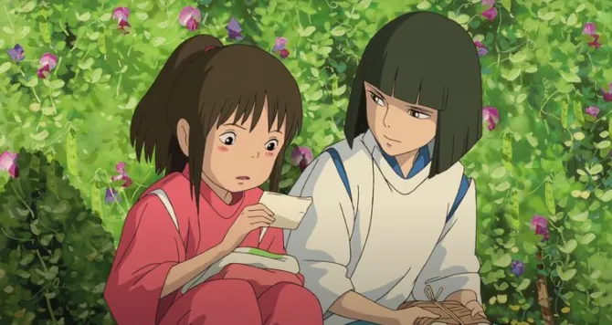
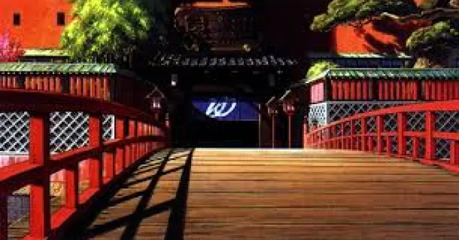
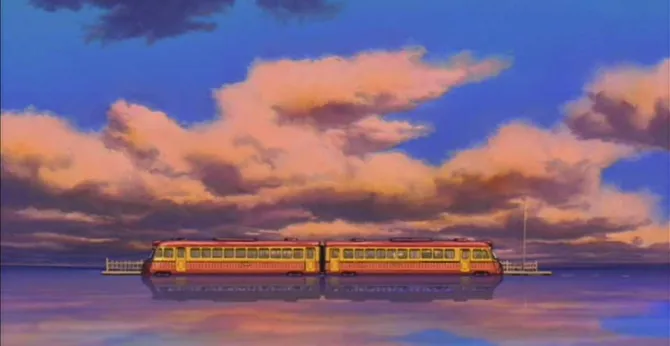

LE VOYAGE DE CHIHIRO
Un voyage attendrissant au royaume des yokai.

L’affiche promotionelle du film, le voyage de chihiro
Le voyage de chihiro est un film d’animation japonaise du studio ghibli réalisé par hayao miyazaki et sortie le 20 juillet 2001, il touche pour thème: Drame, fantasy, aventure et il fut jusqu’en 2020 le plus grand succès de l’histoire du cinéma japonais avec 23 millions de spectateur au japon et 274 millions de dollars de recette et ils reçus même un oscar du meilleur film d’animation et l’ours d’or du meilleur film en 2002.
Synopsis
Le film raconte l’histoire de Chihiro, une fillette qui en se rendant avec ses parents vers sa nouvelle maison se retrouve a passé un mystérieux tunnel, au bout, ils y découvrent un parc à thème abandonné. En s’y baladent, c’est parents trouvent un restaurant bien garnis et se dise qu’il peuvent y manger temps qu’il en paye la consommation ensuite, en désaccord avec ça, la petite chihiro part explorer le village jusqu'à rencontré un jeune homme qui lui conseillera de partir avant le coucher du soleil, mais a son retour ses parents furent transformé en porc et les ombre se mirent à prendre vie. Qui sont ces êtres surnaturels et comment pourrait-elle sauver ces parents ? Seuls sont voyages vous l’apprendra.

Extrait du film, le voyage de chihiro
Distribution
- Réalisation : Hayao Miyazaki
- Scénario : Hayao Miyazaki
- Musique : Joe Hisaishi
- Directeur de l'animation : Masashi Andō
- Photographie : Atsushi Okui
- Montage : Takeshi Seyama
- Producteur : Toshio Suzuki
Est-ce accessible ?
Le film est conseillé au jeunes a partir de 8 ans et il semble être accessible à toute à chacun.

Extrait du film, le voyage de chihiro
Conclusion
Ce film est un chef d'œuvre du passé qui n’a point vieilli d’une ride et qui plaira surement a vos enfant alors proposer le leurs sans hésiter, un tel chef d'œuvre fera forcément mouche.

Extrait du film, le voyage de chihiro
Si vous voulez plus d’information le grand hauteur hayao miyazaki,
Lisez nos autres derniers articles sur cette hauteur célèbre !
Hayao Miyazaki
Filmographie de l’auteur